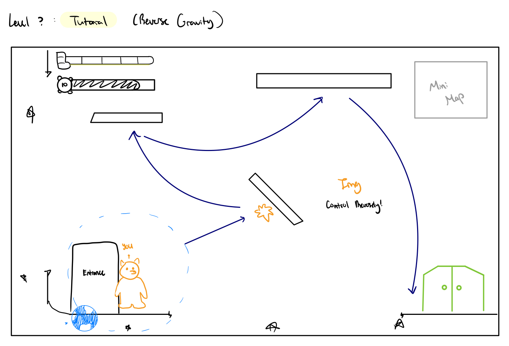
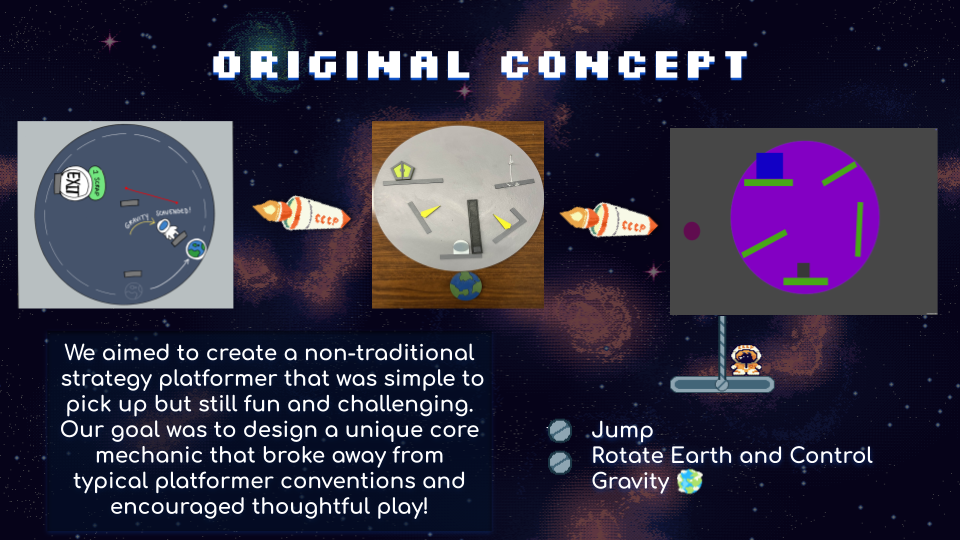

Gone Astray
Gone Astray is a strategy platformer about navigating a shattered spaceship using 360-degree gravity. As Project Lead and Programmer, I managed a 10-person team and built the game’s core gravity and visual systems in Unity.
Brief Overview
Players guide Laika through a series of obstacles by harnessing gravity. The game’s fixed camera and rotating gravity create unique movement and puzzle opportunities.
My Role
Project Management Contributions
- Structured the team into programming, art, and sound units
- Led sprint planning and managed tasks in Jira
- Facilitated stand-ups, milestone reviews, and conflict resolution
- Delivered Golden Master on time; showcased to 400+ players at Cornell
Design Contributions
- Designed core mechanics (360° gravity, fixed camera, puzzle-platforming)
- Created and iterated on level layouts and obstacles
- Ran playtests and iterated based on player feedback
Technical Contributions
- Programmed the gravity manipulation system and minimap in LibGDX (Java)
- Implemented dynamic backgrounds and UI
- Built tools for rapid level prototyping
Development Process
Initial Concept
Non-Digital Prototype
Gameplay Prototype
Technical Prototype
Alpha Release
Beta Release
Golden Master
Tools Used
- Figma
- Jira
- LibGDX
- GitHub
Challenge: Rapid Level Iteration
Solution: Built Unity editor tools for quick level prototyping and playtesting, enabling fast feedback cycles.
Level Designs & Gameplay



- Showcased at Cornell GDIAC Expo to 400+ players
- Received “Most Polished Game” award
- Shipped to Itch.io (Indie Video Game Platform)
Reflection
I learned a lot by working on Gone Astray. This project taught me valuable skills in teamwork, project management, and game design. Such as learning how to manage a project from beginning to end, creating and executing architecture for a game, effectively communicating with team members and learning how to incorporate feedback into the development process. Especially also learning how to prioritize tasks effectively. I also gained important programming skills, and learned how to create engaging gameplay mechanics that enhance the player's experience. I look forward to applying these skills in future projects.



Future Work
We plan to ship additional content updates for Gone Astray and launch on Steam by Fall 2025!